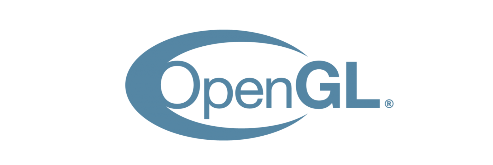
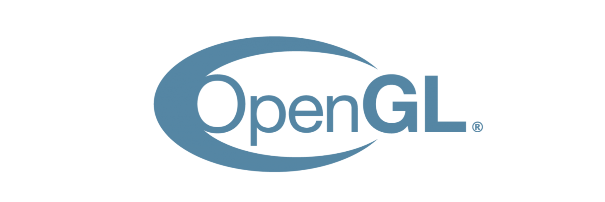

I’m Luca Hohmann. I study Computer Science at the Technical University Munich in my fifth semester.
Currently I’m working as 'AR & ML assisting student scientist' for the Chair of Information Systems at TUM.
My current field of interests are Procedural Generation, Augmented Reality, Privacy & Security, Open Source as well as Game Development.
In my free time I love to go biking. I also enjoy attending local events like workshops, meetups or talks. But most importantly I love reading textbooks and playing games.
I grew up in a suburb of munich
At the age of 14 I started to teach myself 3D Art and photo editing
The year after, my school introduced me to Computer Science
At the age of 18 I graduated from school and directly transitioned to my studies of Computer Science and Games Engineering
My curriculum vitae* can be downloaded here:
link to downlaod
 


